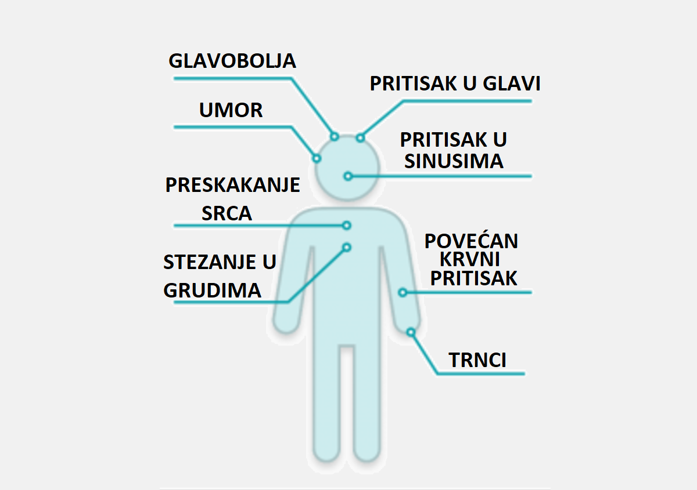
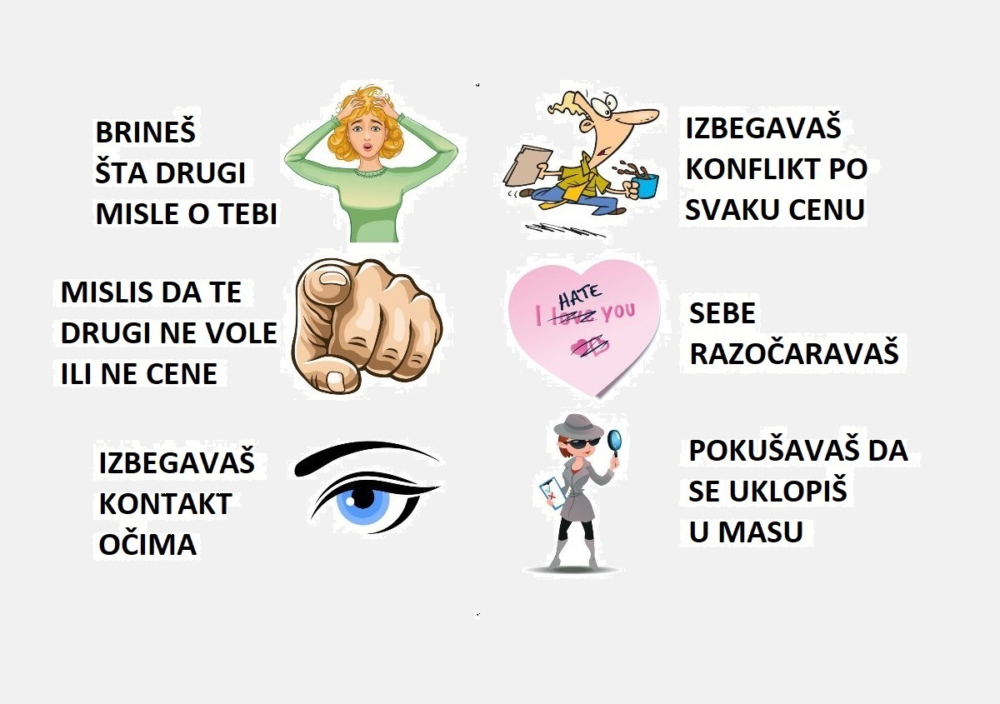
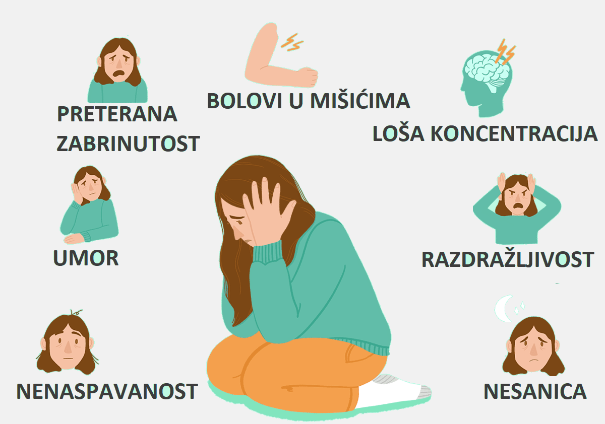

Dobrodošli na veb portal za psihološko savetovanje!
Pogledajte neke od najčešćih simptoma:
NAPAD PANIKE

OKP

UZOCI/OKIDAČI

PROBLEMI SA BESOM

STRES

DEPERSONALIZACIJA
DEPRESIJA

MANJAK SAMOPOUZDANJA

ANKSIOZNOST